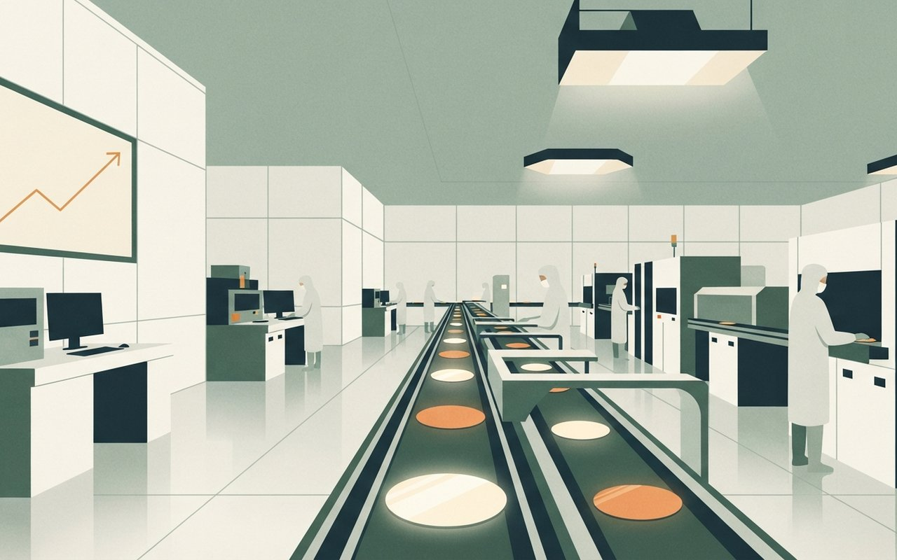
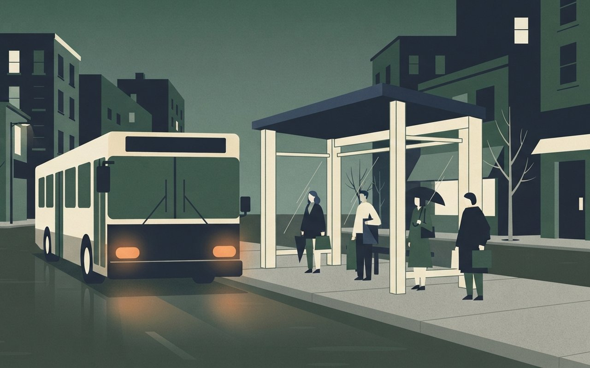

🎧 낭독 원고 보기
10월 30일 금요일, 데일리 브리프입니다. 오늘은 여섯 가지 소식을 전해 드립니다.
삼성전자가 3분기 영업이익 107조 원을 넘겼습니다. 정확히는 107조 4,405억 원으로, 전년 같은 기간보다 783% 늘었고 반도체 부문이 영업이익의 99%를 냈습니다. 매출은 195조 원대이고, 가전과 모바일 부문은 8,000억 원 적자였습니다. 하지만 어제 코스피는 1.24% 내린 5,937로 마쳐 6,000선을 하루 만에 내줬고 삼성전자 주가도 4% 넘게 떨어졌습니다. 경향신문에 따르면 올해 주주환원은 최대 110조 원이라고 밝혔지만, 나머지 방식이 내년 1월 이사회에서 정해진다는 점에 대한 실망 매물이라는 분석입니다. 외국인과 기관은 팔고 개인이 샀습니다.
윤석열 전 대통령의 내란 우두머리 혐의 항소심에서 특검이 사형을 구형했습니다. 1심은 무기징역이었습니다. 특검은 12·3 내란을 용서받지 못할 헌정 파괴 범죄라고 밝혔고, 김용현 등 다른 피고인에게도 무기징역과 징역 10년에서 30년을 구형했습니다. 변호인단은 특검이 원심이 배척한 수첩 문구를 짜깁기했다고 반박했고, 변론은 다음 달 초 이어집니다. 선고일은 아직 정해지지 않았고, 구형은 선고가 아닙니다.
경기도 버스 노사가 밤샘 협상 끝에 합의해 총파업을 철회했습니다. 시급은 3.2% 오르고, 주 2일 연속 휴무도 담겼습니다. 소급분은 내년 2월 말 지급합니다. 27개 사업장이 합의했고, 선진운수는 조정 중지로 빠졌습니다. 오늘 버스는 정상 운행합니다.
진에어가 회원 1,454명의 이름과 생년월일, 휴대전화 번호 등이 유출됐다고 공지했습니다. 비밀번호와 결제 정보는 유출되지 않았다는 설명입니다. SK플래닛 기프티콘 서비스도 외부 접근이 감지돼 규모를 집계 중입니다. 별개로, 대한항공과 아시아나도 협력업체로부터 유출 가능성을 통지받았다고 전해집니다.
스페인 톨레도 열차 충돌 사고 사망자는 매체에 따라 최소 68명, 69명으로 집계됩니다. 한국인 10명이 타고 있었고 2명이 다쳤습니다. 교통장관은 신호 오류에도 열차가 진행했다며 설명할 수 없는 일이라고 말했습니다. 원인은 조사 중이며, 희생자와 유가족께 애도를 전합니다.
미국 9월 PCE 물가가 3.6%로 올랐고, 시장은 연준의 12월 금리 인상 확률을 85% 안팎으로 반영하고 있습니다. 물가는 8월 3.4%에서 올랐습니다. 유럽중앙은행은 기준금리를 2.5%로 동결하며 에너지발 인플레이션 위험을 경고했습니다.
끝으로 오늘 서울 날씨입니다. 아침 최저 9도, 낮 최고 18도로 예보됐고, 수도권은 대체로 흐리겠습니다. 날씨는 바뀔 수 있습니다.
이상 데일리 브리프였습니다. 자세한 출처는 카드에서 확인하실 수 있습니다. 오늘도 좋은 하루 보내세요.
刑
사법 · 내란 항소심
특검, 윤석열에 항소심에서도 사형 구형 — 1심은 무기징역, 변호인단은 반박
서울고법 내란전담재판부(형사12-1부) 결심 공판에서 조은석 내란 특검팀이 윤석열 전 대통령에게 사형을 구형했다. 1심은 무기징역이었다. 특검은 "12·3 내란은 대한민국의 시계를 40년 전으로 되돌리려 한, 용서받지 못할 헌정 파괴 범죄"라고 밝혔다(경향신문).
함께 재판받는 김용현에게는 무기징역(1심 30년), 노상원에게 30년, 조지호 20년, 김봉식 15년, 목현태 12년을 구형했고, 김용군·윤승영에게는 각 10년을 구형했다(두 사람은 1심 무죄). 변호인단은 특검이 원심이 배척한 노상원 수첩 문구를 짜깁기해 친위 쿠데타 주장을 다시 꺼냈다고 반박했다(YTN). 구형은 선고가 아니며, 선고일은 두 매체 모두 정해지지 않았다고 전한다.
- 윤석열특검 사형 구형 · 1심 무기징역
- 다른 피고인 구형김용현 무기(1심 30년) · 노상원 30년 · 조지호 20년 · 김봉식 15년 · 목현태 12년 · 김용군·윤승영 각 10년(1심 무죄)
- 재판부서울고법 내란전담재판부 형사12-1부(이승철 부장판사)
- 남은 일정경향: 변호인 최종변론 11/3·11/5 / YTN: 11/5 최후진술 뒤 선고일 지정, 연내 선고 전망 · 선고일 미정
- 확인 한계구형량·인용문은 경향신문, 변호인 반박·일정은 YTN ⚠ 일정 변동 가능
Context · 맥락 읽기
특검 구형은 검찰 측 요청일 뿐 판결이 아니다. 이 카드는 구형량과 양측 주장을 전하는 데 그치고, 선고 결과나 양형을 예단하지 않는다. 선고일은 아직 정해지지 않았다.
경향신문 — 구형량·재판부 YTN — 변호인 반박·일정
경향신문(10/29 12:06, 14:04 수정)·YTN(10/29 21:59) · 구형은 두 매체 일치 · 선고일은 두 매체 모두 미정, 최종변론 날짜는 표현이 달라 병기 (확인 2026-10-30)
윤석열 항소심 결심,
특검 구형 나왔다
특검이 항소심 결심 공판에서 윤석열 전 대통령에게 사형을 구형했어요. 1심은 무기징역이었고, 구형은 선고가 아니라서 선고일은 아직 정해지지 않았어요.
1심 무기징역|항소심 구형|사형
사형|특검 구형(선고 아님)
益
증시 · 삼성전자 실적
삼성전자 3분기 영업이익 107조 4,405억 — 그런데 코스피는 5,937.66, 6,000을 하루 만에 내줬다
삼성전자가 3분기 연결 매출 195조 2,523억 원(전년 동기 +127%), 영업이익 107조 4,405억 원(+783%)을 발표했다. 반도체(DS)가 영업이익 106조 5,000억 원으로 전체의 99%를 차지했고, DS 영업이익률은 72%다. 가전·모바일(DX)은 8,000억 원 영업손실로 2분기 연속 적자다. 영업이익은 시장 전망치를 웃돌았다(서울경제).
주당 4,601원(약 30조 원) 3분기 현금배당과 함께 올해 주주환원을 최대 110조 원으로 밝혔다. 이번 발표 75조 원에 기존 35조 원이다. 나머지 환원 방식은 내년 1월 이사회에서 정한다(경향신문). 29일 코스피는 74.78p(-1.24%) 내린 5,937.66으로 마쳤고 삼성전자는 -4.13%(232,000원)였다. 한국경제는 환원책 구체안이 내년 1월로 미뤄진 데 대한 실망 매물로 풀었고, 서울경제는 세부 계획이 공개되지 않았다고 전했다.
- 삼성전자 3분기매출 195조 2,523억(+127%) · 영업이익 107조 4,405억(+783%) · DS 영업이익 106조 5,000억(전체의 99%, 이익률 72%) · DX 영업손실 8,000억
- 주주환원3분기 현금배당 주당 4,601원(약 30조) · 올해 최대 110조(이번 75조 + 기존 35조) · 나머지 방식은 내년 1월 이사회(경향 단일)
- 29일 시장코스피 5,937.66(-74.78p, -1.24%) · 코스닥 753.23(-2.34%) · 삼성전자 232,000원(-4.13%) · SK하이닉스 1,526,000원(+2.62%)
- 수급외국인 3,077억 순매도 · 기관 5,776억 순매도 · 개인 6,357억 순매수(한국경제)
- 확인 한계장중 시가는 매체별 수치가 달라 싣지 않음 ⚠ 시황 정보이며 전망·종목 추천 아님
Marketing View · 마케터의 시선
숫자만 보면 호재인데 주가는 내렸다. 시장이 본 것은 영업이익 107조보다 환원 방식이 1월로 미뤄졌다는 점이라고 한국경제가 전한다. 이 카드는 시황과 실적을 나란히 놓았을 뿐 주가 방향을 예측하지 않는다.
경향신문 — 확정 실적·배당 서울경제 — 실적 수치 서울경제 — 코스피 마감 한국경제 — 수급·업종
경향신문(10/29 20:30)·서울경제(10/29 10:17, 16:21)·한국경제(10/29 15:48) · 실적 수치는 경향·서울경제 일치, 종가는 서울경제·한국경제 일치 · 환원 총액·1월 이사회는 경향신문 단일 · 증시 전망·종목 추천 아님 (확인 2026-10-30)
삼성전자 영업이익
107조 넘겼지만
삼성전자가 3분기 영업이익 107조 4,405억 원(전년 대비 +783%)을 냈어요. 하지만 29일 코스피는 1.24% 내린 5,937.66으로 마쳐 6,000선을 내줬어요.
+783%|삼성전자 3분기 영업이익 증가율
A modern semiconductor clean room with rows of glowing wafers on a conveyor and a small upward line chart on a wall screen, flat illustration, no text, no logos

車
생활 · 경기 버스
경기 버스 노사 밤샘 협상 끝 타결 — 총파업 철회, 시급 3.2% 인상·주 2일 연속 휴무
경기도 버스 노사가 29일 오후 3시부터 이어 간 밤샘 협상 끝에 막판 타결해 파업을 철회했다. 버스는 정상 운행한다(YTN). 시급은 준공영제·민영제 모두 3.2% 오르고, 소급분은 2027년 2월 말 지급한다(뉴스1).
주 2일 연속 휴무(요일 고정), 독감 예방접종, 무사고 포상휴가도 합의안에 담겼다. 27개 사업장이 합의했고 선진운수는 조정 중지로 제외됐다(뉴스1). 버스 대수와 조합원 수는 두 기사에 없다.
- 합의시급 3.2% 인상(준공영제·민영제 모두) · 소급분 2027년 2월 말 지급
- 근무·복지주 2일 연속 휴무(요일 고정) · 독감 예방접종 · 무사고 포상휴가
- 범위27개 사업장 합의 · 선진운수는 조정 중지로 제외
- 운행파업 철회 · 버스 정상 운행(YTN)
- 기사에 없는 것버스 대수 · 조합원 수 ⚠ 선진운수 노선은 별도 확인
Marketing View · 마케터의 시선
출근길 변수가 사라졌다는 점이 이 카드의 핵심이다. 다만 합의 대상은 27개 사업장이고 선진운수는 제외돼 있어, 해당 회사 노선 이용자는 운행 공지를 따로 확인하는 편이 안전하다.
뉴스1 — 합의 내용 YTN — 정상 운행
뉴스1(10/30 03:17)·YTN(10/30 02:52) · 3.2%는 두 매체 일치 · 합의 세부와 27개 사업장·선진운수 제외는 뉴스1 단일 (확인 2026-10-30)
경기 버스 노사 밤샘
협상 끝에 타결
경기 버스 노사가 밤샘 협상 끝에 시급 3.2% 인상에 합의해 총파업을 철회했어요. 주 2일 연속 휴무도 담겼고 버스는 정상 운행해요.
3.2%|버스 시급 인상률
A city bus stopped at a bus shelter at early morning with warm headlights and a few commuters waiting, flat illustration, no text, no logos

漏
보안 · 개인정보 유출
진에어 회원 1,454명 정보 유출, SK플래닛 기프티콘 서비스도 외부 접근 — 비밀번호·결제 정보는 아니라고 밝혀
진에어는 29일 홈페이지 공지로 외부 이상 접근을 알렸다. 회원정보 조회 API 공격을 28일 확인해 공격 IP를 막았고, 1,454명의 로그인 ID·이름·생년월일·성별·국적·휴대전화·이메일·최근 접속 시각이 유출됐다. 회사는 비밀번호와 금융·결제 정보는 유출되지 않았고 악용 사례는 확인되지 않았다고 밝혔다(경향신문).
SK플래닛은 28일 오후 6시 40분께 기프티콘 서비스에 외부 이상 접근을 감지해 차단했다. 이름·전화번호·이메일·쿠폰 번호·환불 계좌가 유출된 것으로 추정되며 규모는 집계 중이다. 해당 기프티콘은 폐기·재발행하고 실피해는 전액 보상하겠다고 했다(경향신문). 같은 기사는 대한항공·아시아나가 20일 협력업체 아마데우스로부터 유출 가능성을 통지받았다고 전하지만, 진에어 사건과 같은 원인이라는 언급은 없다.
- 진에어외부 이상 접근 29일 공지 · 28일 회원정보 조회 API 공격 확인 · 1,454명 · 항목: ID·이름·생년월일·성별·국적·휴대전화·이메일·최근 접속 시각
- 진에어 회사 설명비밀번호·금융·결제 정보 미유출 · 악용 사례 미확인 · 개인정보위 신고
- SK플래닛28일 오후 약 6시 40분 기프티콘 서비스 외부 이상 접근 감지·차단 · 이름·전화·이메일·쿠폰 번호·환불 계좌 유출 추정 · 규모 집계 중
- 대한항공·아시아나20일 협력업체 아마데우스로부터 유출 가능성 통지(진에어와 같은 원인이라는 언급은 없음)
- 확인 한계경향신문 단일 · 어제 다룬 빗썸·미래에셋생명·국민은행 후속은 새 기사를 찾지 못함
Context · 맥락 읽기
세 사건은 각각 따로 보도됐고 기사는 서로의 원인을 연결하지 않는다. 이 카드는 회사가 밝힌 유출 항목과 범위만 옮겼으며, 회원 개인의 피해 여부는 각 회사의 개별 안내를 확인해야 한다.
경향신문 — 진에어 경향신문 — SK플래닛
경향신문(10/29 19:09, 20:53) · 단일 매체 두 건 · 아마데우스 통지는 진에어 기사의 한 문장 · 사건 간 인과는 기사에 없음 (확인 2026-10-30)
진에어 회원정보
외부 접근 유출 공지
진에어가 회원정보 조회 API 공격으로 1,454명의 정보가 유출됐다고 밝혔어요. 회사는 비밀번호와 결제 정보는 유출되지 않았다고 설명했어요.
1,454명|진에어 회원정보 유출
軌
국제 · 스페인 열차 참사
스페인 톨레도 열차 충돌 사망 68~69명 집계 — 한국인 10명 탑승 2명 부상, 교통장관 "설명할 수 없는 일"
28일 오전(현지) 톨레도 우르다역 인근에서 국영 렌페 고속열차가 정차 중이던 민간 이리요 열차와 충돌했다. 이리요 객차 2량이 탈선해 둑 아래로 떨어졌다. 탑승객은 544명(렌페 397명, 이리요 147명)이었고 한국인 10명이 타 2명이 다쳤다. 사망자는 경향신문이 69명, 알자지라가 최소 68명으로 전해 집계가 엇갈린다.
올스카 푸엔테 교통장관은 컴퓨터 통신 오류로 적색 신호가 켜졌는데도 렌페 열차가 중앙관제 지시로 진행했다며 "설명할 수 없는 일"이라고 말했다(알자지라). 부상자는 알자지라가 77명, 경향신문이 100명 이상(중상 15명)으로 다르다. 스페인은 3일간 국가 애도 기간에 들어갔고, 올해 1월 코르도바 사고(사망 46명)에도 같은 두 운영사가 있었다(경향신문). 희생자와 유가족께 애도를 전한다.
- 충돌28일 오전(현지) 톨레도 우르다역 인근 · 렌페 고속열차 + 정차 중인 이리요 열차 · 이리요 객차 2량 탈선
- 탑승544명(렌페 397 · 이리요 147) · 한국인 10명 탑승, 2명 부상(경향)
- 사망·부상사망 69명(경향) vs 최소 68명(알자지라) · 부상 77명(알자지라) vs 100명 이상·중상 15명(경향, 현지 당국) — 매체별 불일치
- 원인 발언컴퓨터 통신 오류로 적색 신호에도 중앙관제 지시로 진행 — 교통장관 "설명할 수 없는 일"(알자지라) · 공식 원인 조사 중
- 애도3일 국가 애도 · 1월 코르도바 사고(사망 46명, 같은 두 운영사)
Context · 맥락 읽기
사망·부상 집계는 매체와 시점에 따라 계속 바뀌고 있어, 이 카드는 최신 보도 두 건의 수치를 나란히 적었다. 사고 원인은 장관 발언 수준에서만 전해지며 공식 조사 결과는 아직 나오지 않았다.
경향신문 — 사망 69명·탑승객 알자지라 — 교통장관 발언
경향신문(10/29 21:08)·알자지라(10/29, 시각 미표기) · 사망·부상 수치 매체별 불일치 · 원인은 장관 발언 기준 · 한국인 탑승·부상은 경향신문 단일 (확인 2026-10-30)
스페인 톨레도 열차
충돌 사망자 늘어
스페인 톨레도 열차 충돌 사망자가 경향신문 기준 69명으로 늘었어요. 알자지라는 최소 68명으로 전해 집계가 엇갈리고, 한국인 2명이 다쳤어요.
69명|사망자(경향신문 기준)
物
경제 · 美 물가·ECB
美 9월 PCE 물가 3.6%로 오르고 ECB는 2.5% 동결 — 시장은 연준 12월 인상 확률 약 84.6% 반영
미국 9월 개인소비지출(PCE) 물가는 전년 대비 3.6%로 8월 3.4%보다 올랐고, 근원 PCE는 3.1%였다. 시장은 연준의 12월 금리 인상 확률을 약 84.6% 반영한다(뉴스1). 어제 카드의 "90% 초과"는 28일 연준 회의 직후 기사 기준으로, 날짜와 집계가 달라 수치가 다르다.
유럽중앙은행(ECB)은 기준금리를 2.5%로 동결하며 에너지발 인플레이션 위험을 경고했고, 12월 인상 전망이 강해졌다. 유로화는 약 1년 5개월 만에 최저 수준이다(뉴스1).
- 美 9월 PCE물가 3.6%(8월 3.4%) · 근원 3.1%
- 시장 기대연준 12월 인상 확률 약 84.6%
- ECB기준금리 2.5% 동결 · 에너지발 인플레 위험 경고 · 12월 인상 전망 강화
- 유로화약 1년 5개월 만에 최저
- 확인 한계뉴스1 단일 두 건 · 월간 변동률은 기사 안에서 어긋나 싣지 않음 ⚠ 시장 기대는 바뀔 수 있음
Marketing View · 마케터의 시선
어제는 연준 동결 속 인상 신호였고, 오늘은 물가 지표와 유럽의 경고가 겹쳤다. 달러·환율과 대출금리에 미칠 영향은 기사에 없으므로 이 카드는 전망이 아니라 지표 두 건을 이어 놓은 것이다.
뉴스1 — 美 9월 PCE 뉴스1 — ECB 동결
뉴스1(10/29 22:33)·뉴스1(10/29 22:51) · 단일 매체 두 건 · 제목의 "물가"는 본문상 PCE (확인 2026-10-30)
美 9월 PCE 물가 상승,
ECB는 금리 동결
미국 9월 PCE 물가가 3.6%로 올랐고 시장은 연준의 12월 인상 확률을 약 84.6%로 봐요. ECB는 2.5%로 동결했어요.
84.6%|연준 12월 인상 확률(시장)
A small shopping basket and a wall calendar next to a stack of coins on a bright desk with a soft upward arrow shadow, flat illustration, no text, no logos